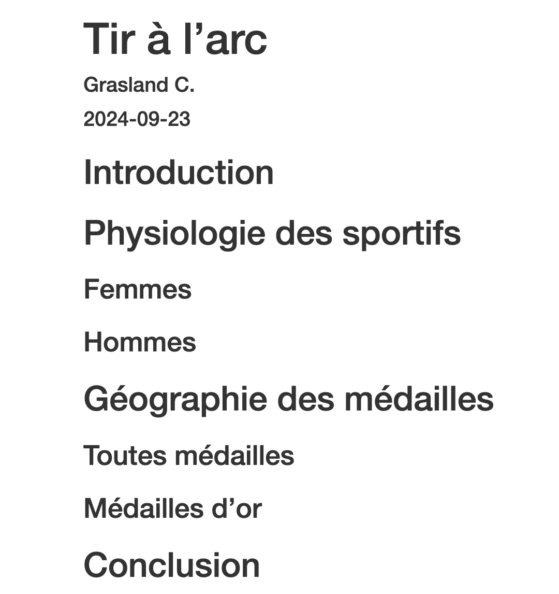
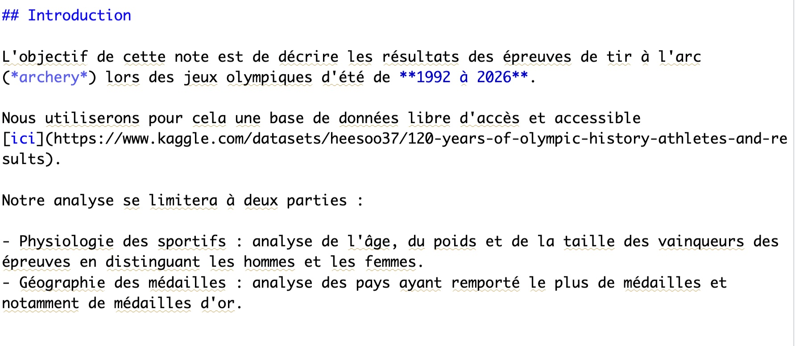

Partie 2 Office killer

- Mise en place : Télécharger le dossier exo2 et décompressez le sur votre ordinateur. Puis ouvrez le projet R
exo2.Rprojdans Rstudio.
Le but de ce chapitre est de montrer le plus tôt possible aux étudiants les possibilités de R et de son environnement R-Studio en ce qui concerne la production de documents ou de présentations dans le cadre d’une démarche reproductible. L’apprentissage précoce de Rmarkdown nous semble en effet indispensable, ne serait-ce que pour que les étudiants apprennent à prendre en cours des notes mélangeant les exemples de code R et les explications données en cours ou en TD.
Mais le but véritable est de convaincre tout ou partie des étudiants qu’ils peuvent remplacer à terme les logiciels de bureautique des suites office par un environnement de travail plus intégré et plus performant… à condition d’oublier la souris pour revenir au clavier !
Real mensch never clcik !
2.1 Rstudio et les projets R
- Au commencement, les dieux de la statistique créèrent le langage R.
- Mais l’interface était vide et vague,
- les ténèbres couvraient les lignes de code
- R-Studio dit : Que le projet soit et le projet fut.
Si l’on veut s’épargner bien des désagréments dans l’apprentissage de R, il faut prendre dès le départ de bonnes habitudes. Parmi celles-ci, l’une des plus importantes est le fait d’inscrire toujours son travail dans le cadre d’un projet R c’est-à-dire - en simplifiant beaucoup - un répertoire de travail contenant l’ensemble des données, programmes, résultats… que l’on pourra par la suite compresser, archiver et transmettre à quelqu’un d’autre.
2.1.1 Lancement de R studio
Sauf à être complètement masochiste, on n’utilise jamais R directement mais on lance d’abord l’interface R-Studio qui facilite conisdérablement l’ensemble des opérations et offre une gamme considérable de services. Il ne faut toutefois pas confondre les deux et il serait par exemple ridicule d’indiquer sur un CV en vue d’un emploi de statisticien que l’on sait utiliser R-studio en oubliant de préciser que l’on maîtrise R.
2.1.2 Création d’un projet
Pour créer un projet on utilise le menus déroulant File/new project/ … et on définit un dossier de notre ordinateur (existant ou à créer) qui contiendra le projet. Une fois l’opération effectuée, on pourra constater que ce dossier contient un fichier xxx.Rproj ou xxx est en principe le nom du dossier dans lequel vous avez stocké le projet.
Ce fichier contient toute une série d’informations dont nous ne parlerons pas dans ce cours d’initiation mais qui, pour faire simple, définissent un ensemble de réglages du logiciel et de préférences de l’utilisateur.
Si vous fermez Rstudio (faites-le !) il vous suffira pour reprendre votre travail là où vous vous étiez arrêté :
- de lancer R-studio et de cliquer sur File/open project/… suivi du nom du fichier xxx.Rproj
- ou plus simplement encore de double cliquer sur le fichier xxx.Rproj ce qui lancera automatiquement Rstudio
Le dossier contenant votre projet R peut être organisé à votre convenance. Certains mettent tout les fichier pêle-mêle dans le dossier. D’autres préfèrent créer des sous-dossiers contenant des données, des programmes, des résultats, des figures. Vous déciderez à l’usage de ce qui vous convient le mieux, mais le point important est que tout ce qui entre ou sort de vos programmes R doit être de préférence stocké dans le répertoire du projet.

2.2 Programme R : Excel killer ?
- C’est pourquoi tu quittera Word et Excel, et t’attachera à R studio,
- et vous deviendrez une seule chair.
La fonction initiale d’un langage de programmation comme R est … de créer des programmes c’est-à-dire des ensembles d’instruction permettant d’accomplir une tâche à l’intérieur d’une chaîne de production. Dans le cas d’un logiciel spécialisé dans l’analyse statistique, il s’agira donc de partir de données (statistiques, géographiques, textuelles, …) pour aboutir à des résultats prenant la forme de tableaux, cartes ou graphiques. Il ne s’agit donc en somme que d’une étape du travail de recherche où le principal avantage de R est d’automatiser une tâche et de faciliter sa reproduction ultérieure avec en arrière plan un objectif de productivité puisque l’ordinateur réalise en quelques millisecondes des tâches qui prendraient des heures avec un logiciel click-bouton de type Excel.

Prenons comme exemple le cas d’un éditeur qui souhaite réaliser une grande encyclopédie des jeux olympiques. Il a besoin pour cela d’embaucher un data analyst qui l’aidera à exploiter une grande base de données qu’il a trouvé sur internet, intitulée 120 years of olympic history, athlets and results
Deux candidats se présentent pour le poste :
- Le candidat A est un expert dans la manipulation du package office (Excel, Word, Power Point, …) avec plus de 30 ans d’expérience.
- Le candidat B est un étudiant de Master 1 ayant suivi un semestre de formation à R et Rstudio.
L’éditeur décide de les mettre en concurrence pour voir lequel des deux candidats est le plus efficace et prépare une série d’épreuves qui seront chronométrées
2.2.1 Round 1 : Importation du tableau de données
Il faut importer le tableau, déterminer le nombre de lignes et de colonnes puis afficher les 5 premières et 5 dernières lignes
On crée un programme R avec File/New File/R Script puis on l’enregistre avec File/Save/ … suivi du nom du programme.
# Importation du tableau
don <- read.table(file = "resources/data/olympic/120-years-of-olympic-history-athletes-and-results.csv",
header= TRUE,
sep =",")
# détermination du nombre de lignes et de colonnes
dim(don)## [1] 271116 15## ID Name Sex Age Height Weight Team NOC
## 1 1 A Dijiang M 24 180 80 China CHN
## 2 2 A Lamusi M 23 170 60 China CHN
## 3 3 Gunnar Nielsen Aaby M 24 NA NA Denmark DEN
## 4 4 Edgar Lindenau Aabye M 34 NA NA Denmark/Sweden DEN
## 5 5 Christine Jacoba Aaftink F 21 185 82 Netherlands NED
## Games Year Season City Sport
## 1 1992 Summer 1992 Summer Barcelona Basketball
## 2 2012 Summer 2012 Summer London Judo
## 3 1920 Summer 1920 Summer Antwerpen Football
## 4 1900 Summer 1900 Summer Paris Tug-Of-War
## 5 1988 Winter 1988 Winter Calgary Speed Skating
## Event Medal
## 1 Basketball Men's Basketball <NA>
## 2 Judo Men's Extra-Lightweight <NA>
## 3 Football Men's Football <NA>
## 4 Tug-Of-War Men's Tug-Of-War Gold
## 5 Speed Skating Women's 500 metres <NA>## ID Name Sex Age Height Weight Team NOC Games
## 271112 135569 Andrzej ya M 29 179 89 Poland-1 POL 1976 Winter
## 271113 135570 Piotr ya M 27 176 59 Poland POL 2014 Winter
## 271114 135570 Piotr ya M 27 176 59 Poland POL 2014 Winter
## 271115 135571 Tomasz Ireneusz ya M 30 185 96 Poland POL 1998 Winter
## 271116 135571 Tomasz Ireneusz ya M 34 185 96 Poland POL 2002 Winter
## Year Season City Sport
## 271112 1976 Winter Innsbruck Luge
## 271113 2014 Winter Sochi Ski Jumping
## 271114 2014 Winter Sochi Ski Jumping
## 271115 1998 Winter Nagano Bobsleigh
## 271116 2002 Winter Salt Lake City Bobsleigh
## Event Medal
## 271112 Luge Mixed (Men)'s Doubles <NA>
## 271113 Ski Jumping Men's Large Hill, Individual <NA>
## 271114 Ski Jumping Men's Large Hill, Team <NA>
## 271115 Bobsleigh Men's Four <NA>
## 271116 Bobsleigh Men's Four <NA>Normalement, les étudiants qui utilisent un tableur ont du aller plus vite et Excel mène sur R par 1-0
2.2.2 Round 2. Inventaire des sports disponible
On souhaite faire l’inventaire de l’ensemble des sports disponibles dans la base de données. Puis créer un tableau indiquant les 10 sports sur lesquels on dispose du plus grand nombre d’information.
## [1] "table"# Transformation de la table en data.frame
res<-data.frame(tab)
# Recodage des noms de variables
names(res)<-c("Sport","Nbresul")
# Tri du tableau
res<-res[order(-res$Nbresul),]
# Affichage de res
head(res, 20)## Sport Nbresul
## 6 Athletics 38624
## 28 Gymnastics 26707
## 55 Swimming 23195
## 48 Shooting 11448
## 20 Cycling 10859
## 23 Fencing 10735
## 44 Rowing 10595
## 18 Cross Country Skiing 9133
## 2 Alpine Skiing 8829
## 66 Wrestling 7154
## 25 Football 6745
## 47 Sailing 6586
## 22 Equestrianism 6344
## 15 Canoeing 6171
## 14 Boxing 6047
## 54 Speed Skating 5613
## 31 Ice Hockey 5516
## 30 Hockey 5417
## 12 Biathlon 4893
## 9 Basketball 4536La création d’un tableau est à première vue plus facile avec un logiciel click-bouton. L’expert en Excel va utiliser la fonction tableau croisé dynamique et produire le tableau en quelques secondes. Il devrait par contre perdre un peu de temps pour trier le tableau mais finir par l’emporter. Excel mène 2-0.
2.2.3 Round 3. Sélection d’un sport
Vous devez maintenant extraire le tableau des résultats de tir à l’arc (“Archery”) après 1990 en ne conservant que les personnes qui ont obtenu une médaille.
# sélection
sel <- don[don$Year > 1990 & don$Sport=="Archery" & is.na(don$Medal)==FALSE,]
# Affichage
head(sel)## ID Name Sex Age Height Weight Team NOC
## 9542 5233 Virginie Arnold F 28 155 50 France FRA
## 9966 5447 Loedmila Arzjannikova F 34 168 62 Unified Team EUN
## 11205 6126 Mariana Avitia Martnez F 18 164 61 Mexico MEX
## 12356 6710 Bair Dorzhiyevich Badyonov M 32 178 75 Russia RUS
## 22407 11799 Matteo Bisiani M 19 184 85 Italy ITA
## 22409 11799 Matteo Bisiani M 24 184 85 Italy ITA
## Games Year Season City Sport Event
## 9542 2008 Summer 2008 Summer Beijing Archery Archery Women's Team
## 9966 1992 Summer 1992 Summer Barcelona Archery Archery Women's Team
## 11205 2012 Summer 2012 Summer London Archery Archery Women's Individual
## 12356 2008 Summer 2008 Summer Beijing Archery Archery Men's Individual
## 22407 1996 Summer 1996 Summer Atlanta Archery Archery Men's Team
## 22409 2000 Summer 2000 Summer Sydney Archery Archery Men's Team
## Medal
## 9542 Bronze
## 9966 Bronze
## 11205 Bronze
## 12356 Bronze
## 22407 Bronze
## 22409 SilverLà, je parie que les utilisateurs d’Excel ont eu un peu plus de mal … mais on va supposer qu’il y a match nul : Excel = 3, R = 1
2.2.4 Round 4. Analyse de l’âge, du poids, de la taille et de l’IMC des sportifs
Résumez statistiquement, l’âge, le poids, la taille et l’Indice de Masse Corporelle (IMC = Poids en kg/ carré de la taille en mètres ) des personnes ayant obtenu une médaille en séparant les hommes et les femmes.
## $F
## Min. 1st Qu. Median Mean 3rd Qu. Max.
## 17.00 21.00 24.00 24.31 27.00 39.00
##
## $M
## Min. 1st Qu. Median Mean 3rd Qu. Max.
## 17.00 21.00 24.00 25.25 27.25 45.00## $F
## Min. 1st Qu. Median Mean 3rd Qu. Max. NA's
## 155.0 165.0 168.0 167.8 170.0 185.0 7
##
## $M
## Min. 1st Qu. Median Mean 3rd Qu. Max. NA's
## 170.0 178.0 180.0 179.9 183.0 191.0 2## $F
## Min. 1st Qu. Median Mean 3rd Qu. Max. NA's
## 50.00 58.00 63.00 62.84 65.00 86.00 7
##
## $M
## Min. 1st Qu. Median Mean 3rd Qu. Max. NA's
## 58.00 73.00 78.50 81.71 89.75 110.00 2## $F
## Min. 1st Qu. Median Mean 3rd Qu. Max. NA's
## 18.78 20.44 22.06 22.31 24.01 28.73 7
##
## $M
## Min. 1st Qu. Median Mean 3rd Qu. Max. NA's
## 19.82 22.23 24.43 25.22 27.31 33.58 2Quelque chose me dit qu’Excel a eu un peu de mal à résoudre le problème. Le score est désormais de 3-2
2.2.5 Round 5 : Nombre de médailles d’or par pays et par épreuve
On cherche maintenant à déterminer le nombre de médailles par pays et par épreuve. Attention, dans le cas des épreuves par équipe il ne faut compter les membres d’une équipe qu’une seule fois …
# Sélection des lignes (médailles d'or)
sel2 <- sel[sel$Medal=="Gold",]
# Selection des colonnes
sel3 <- sel2[,c("NOC","Year","Event")]
# Elimination des doublons
sel4 <-unique(sel3)
# Tableau croisé
tab<-table(sel4$Event,sel4$NOC)
# Tri des pays ayant le plus de médailles
# Ajout des marges
addmargins(tab)##
## AUS CHN ESP FRA ITA KOR UKR USA Sum
## Archery Men's Individual 1 0 0 1 1 2 1 1 7
## Archery Men's Team 0 0 1 0 1 4 0 1 7
## Archery Women's Individual 0 1 0 0 0 6 0 0 7
## Archery Women's Team 0 0 0 0 0 7 0 0 7
## Sum 1 1 1 1 2 19 1 2 28Quelque chose me dit qu’Excel a eu un beaucoup de mal à résoudre le problème. Le score est désormais de 3-3
2.2.6 Dernier round. Refaire toute l’analyse en changeant de sport
On remplace le sport “Archery” par le sport “Judo” et on refait toute les analyses
# (1) Importation du tableau
don <- read.table(file = "resources/data/olympic/120-years-of-olympic-history-athletes-and-results.csv",
header= TRUE,
sep =",")
# (2) Sélection du sport et de la data
sel <- don[don$Year > 1990 & don$Sport=="Judo" & is.na(don$Medal)==FALSE,]
# (3) Caractéristiques des sportifs
tapply(sel$Age,
INDEX = sel$Sex,
FUN="summary")## $F
## Min. 1st Qu. Median Mean 3rd Qu. Max.
## 16.00 23.00 25.00 25.03 28.00 33.00
##
## $M
## Min. 1st Qu. Median Mean 3rd Qu. Max.
## 17.00 23.00 25.00 25.32 27.00 34.00## $F
## Min. 1st Qu. Median Mean 3rd Qu. Max. NA's
## 146.0 160.0 166.0 166.1 173.0 186.0 7
##
## $M
## Min. 1st Qu. Median Mean 3rd Qu. Max. NA's
## 159.0 170.2 178.0 178.7 185.0 203.0 10## $F
## Min. 1st Qu. Median Mean 3rd Qu. Max. NA's
## 48.00 55.50 63.00 68.38 76.25 135.00 8
##
## $M
## Min. 1st Qu. Median Mean 3rd Qu. Max. NA's
## 60.00 66.00 81.00 86.69 100.00 175.00 10## $F
## Min. 1st Qu. Median Mean 3rd Qu. Max. NA's
## 18.52 21.38 22.85 24.45 25.24 43.60 8
##
## $M
## Min. 1st Qu. Median Mean 3rd Qu. Max. NA's
## 19.37 23.84 25.78 26.76 28.40 56.50 10# (4) Médailles d'or par pays et épreuve
# Sélection des lignes (médailles d'or)
sel2 <- sel[sel$Medal=="Gold",]
# Selection des colonnes
sel3 <- sel2[,c("NOC","Year","Event")]
# Elimination des doublons
sel4 <-unique(sel3)
# Tableau croisé
tab<-table(sel4$Event,sel4$NOC)
# Ajout des marges
addmargins(tab)##
## ARG AZE BEL BLR BRA CHN CUB CZE ESP EUN FRA
## Judo Men's Extra-Lightweight 0 0 0 0 0 0 0 0 0 1 0
## Judo Men's Half-Heavyweight 0 0 0 1 0 0 0 1 0 0 0
## Judo Men's Half-Lightweight 0 0 0 0 1 0 0 0 0 0 0
## Judo Men's Half-Middleweight 0 0 0 0 0 0 0 0 0 0 1
## Judo Men's Heavyweight 0 0 0 0 0 0 0 0 0 1 4
## Judo Men's Lightweight 0 1 0 0 0 0 0 0 0 0 0
## Judo Men's Middleweight 0 0 0 0 0 0 0 0 0 0 0
## Judo Women's Extra-Lightweight 1 0 0 0 1 0 0 0 0 0 1
## Judo Women's Half-Heavyweight 0 0 1 0 0 2 0 0 0 0 0
## Judo Women's Half-Lightweight 0 0 0 0 0 2 1 0 1 0 1
## Judo Women's Half-Middleweight 0 0 0 0 0 0 0 0 0 0 2
## Judo Women's Heavyweight 0 0 0 0 0 4 1 0 0 0 1
## Judo Women's Lightweight 0 0 0 0 1 0 1 0 2 0 0
## Judo Women's Middleweight 0 0 0 0 0 0 2 0 0 0 1
## Sum 1 1 1 1 3 8 5 1 3 2 11
##
## GEO GER GRE HUN ITA JPN KOR KOS MGL NED POL
## Judo Men's Extra-Lightweight 0 0 0 0 0 3 1 0 0 0 0
## Judo Men's Half-Heavyweight 0 0 0 1 0 1 0 0 1 0 1
## Judo Men's Half-Lightweight 1 1 0 0 1 2 0 0 0 0 0
## Judo Men's Half-Middleweight 0 1 1 0 0 2 1 0 0 0 0
## Judo Men's Heavyweight 0 0 0 0 0 2 0 0 0 0 0
## Judo Men's Lightweight 0 0 0 0 1 3 1 0 0 0 0
## Judo Men's Middleweight 2 0 0 0 0 1 2 0 0 1 1
## Judo Women's Extra-Lightweight 0 0 0 0 0 2 0 0 0 0 0
## Judo Women's Half-Heavyweight 0 0 0 0 0 1 1 0 0 0 0
## Judo Women's Half-Lightweight 0 0 0 0 0 0 0 1 0 0 0
## Judo Women's Half-Middleweight 0 0 0 0 0 3 0 0 0 0 0
## Judo Women's Heavyweight 0 0 0 0 0 1 0 0 0 0 0
## Judo Women's Lightweight 0 1 0 0 1 1 0 0 0 0 0
## Judo Women's Middleweight 0 0 0 0 0 3 1 0 0 0 0
## Sum 3 3 1 1 3 25 7 1 1 1 2
##
## PRK ROU RUS SLO TUR USA Sum
## Judo Men's Extra-Lightweight 0 0 2 0 0 0 7
## Judo Men's Half-Heavyweight 0 0 1 0 0 0 7
## Judo Men's Half-Lightweight 0 0 0 0 1 0 7
## Judo Men's Half-Middleweight 0 0 1 0 0 0 7
## Judo Men's Heavyweight 0 0 0 0 0 0 7
## Judo Men's Lightweight 0 0 1 0 0 0 7
## Judo Men's Middleweight 0 0 0 0 0 0 7
## Judo Women's Extra-Lightweight 1 1 0 0 0 0 7
## Judo Women's Half-Heavyweight 0 0 0 0 0 2 7
## Judo Women's Half-Lightweight 1 0 0 0 0 0 7
## Judo Women's Half-Middleweight 0 0 0 2 0 0 7
## Judo Women's Heavyweight 0 0 0 0 0 0 7
## Judo Women's Lightweight 0 0 0 0 0 0 7
## Judo Women's Middleweight 0 0 0 0 0 0 7
## Sum 2 1 5 2 1 2 98Excel n’a aucune chance d’aller plus vite et R remporte le match par KO !
2.3 Document Rmd : Word killer ?
- R-Studio dit : « Faisons une interface de rédaction adaptée à notre travail,
- Que l’utilisateur puissent y insérer les tableaux, les graphiques, les cartes, les références bibliographiques, et tous les écrits qui les commentent. »
Nous venons de voir comment une bonne pratique de R peut conduire progressivement à abandonner l’usage des tableurs (Excel, Open Office) sauf peut-être pour l’étape de saisie des données. Dès lors qu’il s’agit de réaliser des graphiques ou des calculs statistiques complexes, la rédaction d’un programme se révèle beaucoup plus intéressante même si elle impose un coût initial d’apprentissage.
Mais une bonne pratique de R ou plus précisément des documents R markdown peut vous conduire beaucoup plus loin et vous amener à abandonner également votre logiciel de traitement de texte (Word) et votre outil de présentation (Power Point). Le coût d’apprentissage est naturellement un peu plus élevé mais les bénéfices sont à la mesure de l’investissement.
Comme le montre la figure ci-dessous, un document R markdown est en quelques sorte un mélange entre des lignes de code R qui executent des tâches et des lignes de texte où sont expliqués les calculs et commentés les résultats obtenus. En d’autres termes, un document R markdown vous permet de rédiger un article de recherche complet, une présentation à une conférence, un syllabus de cours, dans un seul environnement logiciel (R studio).
Nul besoin de ciseau et de colle pour aller chercher tel tableau ici, tel figure là-bas ou telle carte ailleurs. Tous ces éléments sont intégrs au fur et à mesure de la rédaction ce qui facilite considérablement la concentration. Et surtout - on l’a déjà vu pour le programme R - le document peut facilement être reproduit ou mise à jour sans être obligé de réplique des dizaines de click de souris.

On va supposer que l’on veut rédiger une fiche de synthèse d’une page sur une épreuve sportive comportant un tableau, un graphique et une carte
2.3.1 Préparation du document Rmarkdown
On commence par rassembler dans un dossier les données dont nous aurons besoin et on les stocke dans des sous-dossiers. Dans l’exemple ci-dessous on a créé un dossier appelé olympic avec un sous-dossier data pour les tableaux statistiques, un dossier img pour les photographies et un dossier map pour les fonds de carte. Une fois que cela est fait, on crée un projet R dans le dossier ce qui entraîne la création du fichier `olympic.Rproj’.

A l’intérieur de ce projet, on crée un document de type Rmd (R markdown) auquel on donne le titre “Tir à l’arc” et on le sauvegarde sous le nom Rapport.Rmd.
2.3.2 Préparation du plan
Au moment de l’ouverture, le document ressemble à ceci:
On garde le premier bloc de programme (en gris) et on élimine toute la partie créée par Rstudio pour servir d’exemple. On la remplace par notre plan en utilisant des instructions pour hiérarchiser les parties (##) , sous-parties (###) et sous-sous parties (####). On évitera d’utiliser (#) qui correspond à un titre de chapitre ou d’ouvrage.
On clique alors sur le bouton “Knit” (une pelotte de laine bleue) pour visualiser le résultat qui s’affiche sous la forme d’une page .html.

2.3.3 Ajout d’images externes
On décide de placer en tête de notre document une image d’une sportive française ayant obtenu la médaille de bronze au JO de Paris 2024. Il y a deux solution pour cela. Soit on utilise directement une commande Markdown, soit on crée un bloc de programme. Dans ce cas on utilisera la commande include_graphics() du package knitr et l’on précisera les paramètres de l’image dans l’en-tête du bloc de programme.

Les résultats sont identiques mais la seconde solution est en général préférable car elle permet d’opérer des réglages plus précis, notamment pour les renvois.
2.3.4 Ajout de texte
On rédige l’introduction de la note en tapant du texte et en ajoutant du gras ou de l’italique à l’aide des caractères spéciaux du langage Markdown. Dans l’exemple ci-dessous, on a également introduit un lien web vers une URL et une énumération sous forme de puces.

Voici le résultat en html une fois que l’on a cliqué sur le bouton knit
2.3.5 Ajout d’un tableau
On décide d’ajouter un tableau de l’ensemble des femmes qui ont été médaillées dans l’épreuve individuelle de tir à l’arc de 1992 à 2024. Pour que le tableau soit plus joli on va l’afficher avec la commande kable() du package knitr

Voici le résultat dans la page .html

2.3.6 Ajout d’un graphique
On souhaite comparer la taille des hommes et des femmes à l’aide d’une boîte à moustache. On introduit donc dans notre document markdown le bloc de code suivant :

Ce qui donne le résultat suivant :

2.3.7 Ajout d’une carte
Supposons pour finir qu’on veuille afficher une carte du Monde indiquant la répartition par pays des médailles du sport considéré. On dispose pour cela d’un fonds de carte des pays du Monde que l’on va charger pour ensuite visualiser le nombre de médailles par pays. Le programme est un peu plus complexe que les précédents et fait appel aux packages sfet map_sf qui sont spécialisées dans la cartographie. Voici le programme :

Et le résultat :
2.4 Diapos Rmd : Power Point killer
Lorsque l’on crée un fichier Markdown, on peut décider qu’il ne s’agit pas d’un document mais d’une présentation et opter pour l’un des deux modes par défaut appelés slidy et ioslides.

On peut ensuite créer un diaporama en donnant un titre général et en séparant chaque diapo par un titre de niveau 2 correspondant à des lignes débutant par ## comme dans l’exemple ci-dessous :

Il ne reste plus qu’à compiler le programme avec l’icône Knit (pelotte de laine) pour générer un document .html en forme de dipositives.